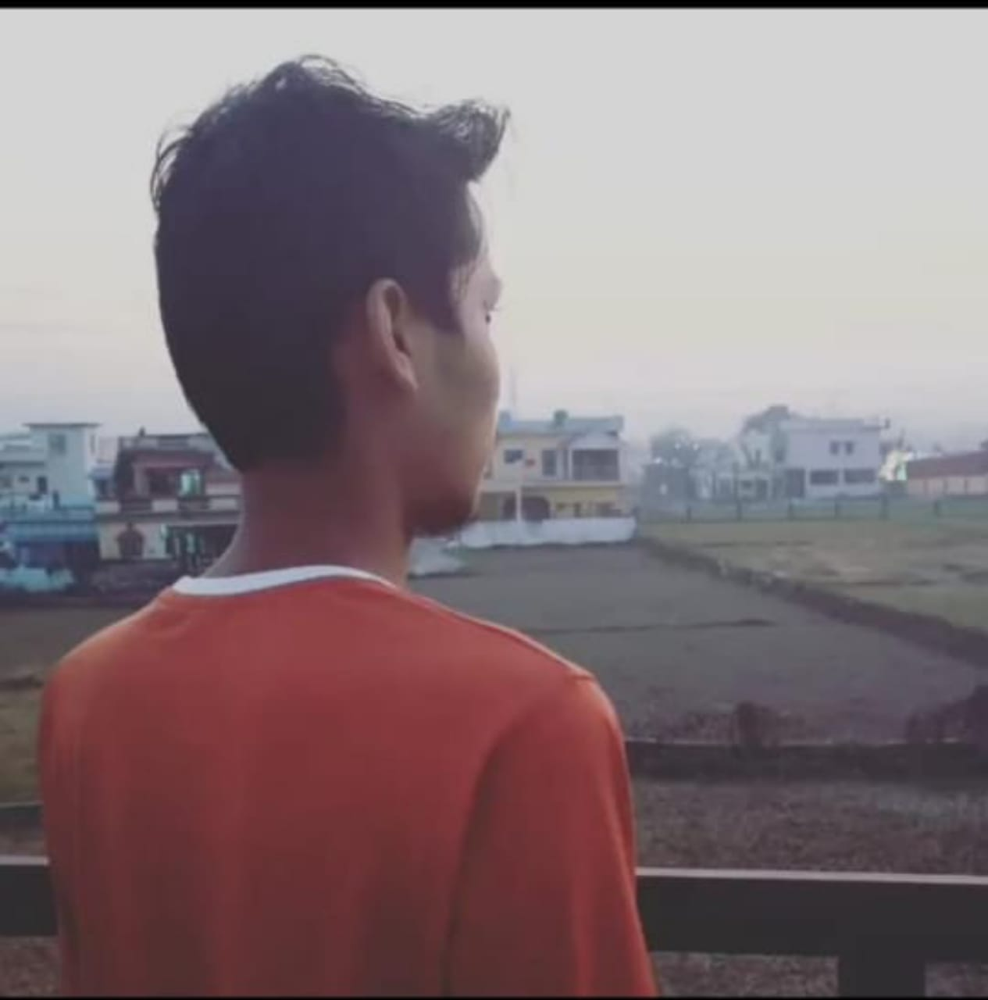

ABOUT MYSELF
- My name is Ravish. I'm from Uttarakhand, Dehradun. Currently i'm pursuing my graduation.
- I found myself quite passionate about learning coding.
- Apart of that, i'm a hungry learner. Everyday i use to code for practicing more and more as i'm
a
beginner and i need to enhance my skills.
- I'm a soft hearted person. I always try to help needy peoples as much as possible by me. I
respect
everyone and talk politely with others.
MY HOBBIES
- I like dance, listening music and also i believe that music is the best medicine for inner
emotions.
- I love to explore and experience new things.
- I want to sustain my physical strength and a healthy body for a long
period of time as everyone wants.
- In indore games, i like playing "PUBG" and "clash Of Clans" and in
outdoor games, i love to play "FootBall".
MY DARK SECRETS
- I'm agnostic.
- My perspective is totally different about many things like marriage, relationship, genders, peoples
e.t.c. so i don't talk or debate with anyone about all these topics.
- This is kinda funny what happened to me a year ago because of my stupidity, i met a guy through
internet. He was a local there and he promissed me to provide a call girl for paid fun. Everything
was just fixed between us. I bought condoms, mouthfresher, wine, etc for being prepared for that
moment. Offcourse all of this is not for free i paid few amount in advance and promised to pay rest
after i'm done. And finally that moment came, i talked to that girl and a guy and they want me to
come to their place so i went there and when i reached there i didn't found anyone there and when i
called him/her they asking for more money to book a hotel and all. After all of that i figured out
that they scammed me and that's how my dream got broken lol.
- I got kinda addicted to alcohol 3 years back. Many times i came back to home after getting drunk
from my college and my parents weren't able to caught me because may be i would say i was kinda
smart.
- DARKEST DAY OF MY LIFE :- I actually don't wanna say more about this topic because i don't
even wanna think about it. That was not just a darkest day of my life but something more.
And that day came into my life last year. I struggled to survive that night, my one mistake and i
was gonna lose my life. I saw death too close to my eyes but the good part was that GOD saved me
because i was praying at that scary moment
- MY DREAM GIRL:- I wanna marry a girl with strong emotions, who can drink with me at night
bars, who can understand me better than anyone else, who can not care about society, with whome i
can share my internal feelings and with a open minded mentality. i don't need a girl wearing saree
and sindoor, showingOff, agressive nature and all.